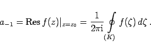
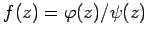
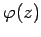
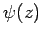
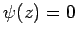
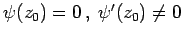
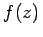
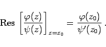
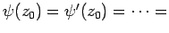
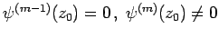

Inhalt Index DeskTop Bronstein

 Funktionentheorie Potenzreihenentwicklung analytischer Funktionen Isolierte singuläre Stellen und der Residuensatz
Funktionentheorie Potenzreihenentwicklung analytischer Funktionen Isolierte singuläre Stellen und der Residuensatz


Den Koeffizienten a-1 der Potenz (z - z0)-1 in der LAURENT-Entwicklung von f(z) bezeichnet man als Residuum der Funktion f(z) im singulären Punkt z0:
|  | (14.54a) |
Das zu einem Pol m-ter Ordnung gehörende Residuum kann mit der Formel
berechnet werden.
Wenn die Funktion als Quotient gemäß  dargestellt werden kann, wobei die Funktionen  und  im Punkt z = z0 analytisch und z0 eine einfache Wurzel der Gleichung  sein soll, so daß  ist, dann ist der Punkt z = z0 ein Pol 1. Ordnung der Funktion . Mit (14.54b) ergibt sich:
|  | (14.54c) |
Wenn z0 eine m-fache Wurzel der Gleichung ist, d.h., wenn   ist, dann ist der Punkt z = z0 ein m-facher Pol der Funktion .